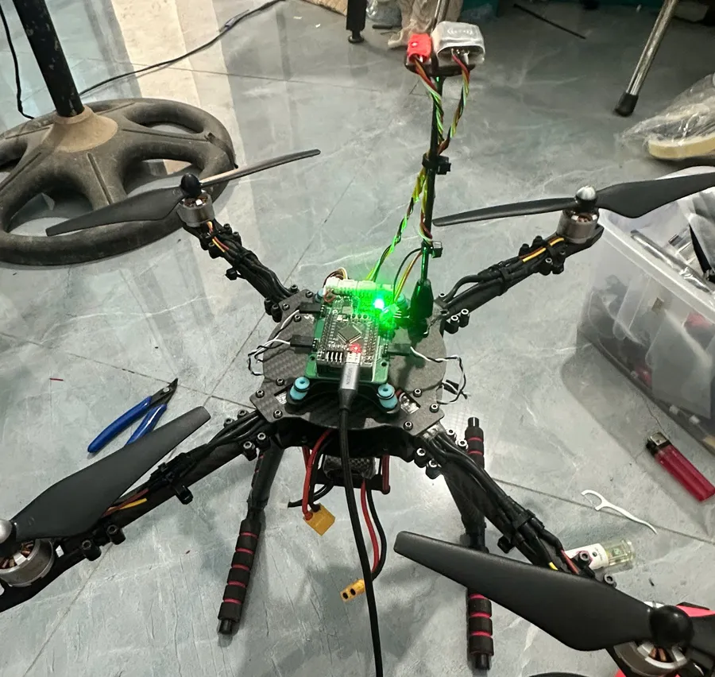
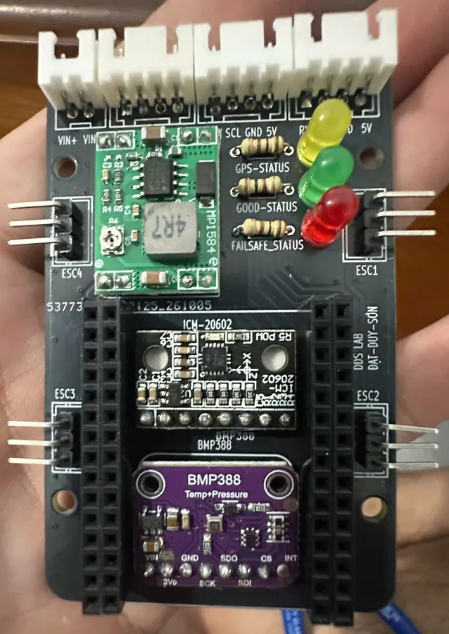

Trang dự án cá nhân
Nơi lưu sơ đồ mạch, mã nguồn và giải đáp cho các video trên kênh TikTok của mình.
Mỗi dự án có một trang riêng với đầy đủ linh kiện cần mua, sơ đồ nối dây, mã nguồn tải về và phần câu hỏi thường gặp. Nếu bạn vừa xem video và đang mắc ở bước nào đó, hãy bắt đầu từ trang dự án tương ứng trong menu Dự án.


▶ Xem video trên TikTok: video 1
Các phiên bản
Tải về
- FC_F405_V1.zip — Quadcopter V1, chỉ tự cân bằng, một cảm biến ICM-20602
- FC_F405_ALT.zip — Quadcopter V2, thêm BMP388, giữ độ cao tự động
- FC_F405_V3.zip — Quadcopter V3, GPS GEP-M10 + la bàn IST8310 (bản đầu)
- FC_F405_M10_HTD.zip — Quadcopter V4, bản GPS hoàn thiện, kèm 2 sketch kiểm tra
Muốn xem mình đang làm gì? Ghé Nhật ký để xem các cập nhật mới nhất.